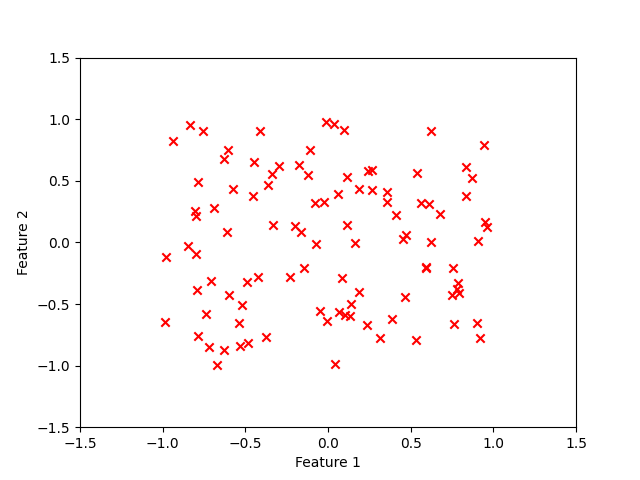
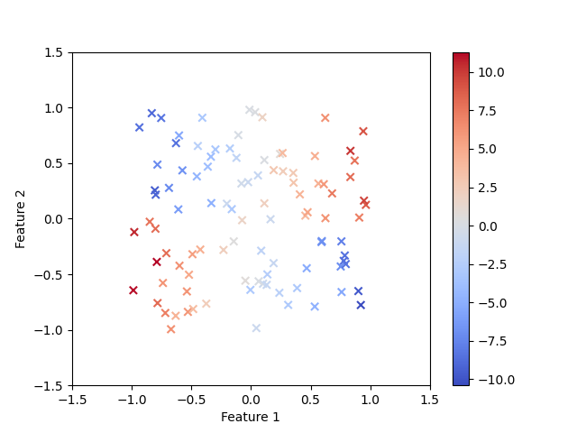
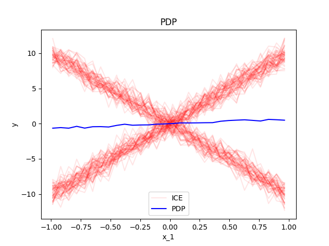
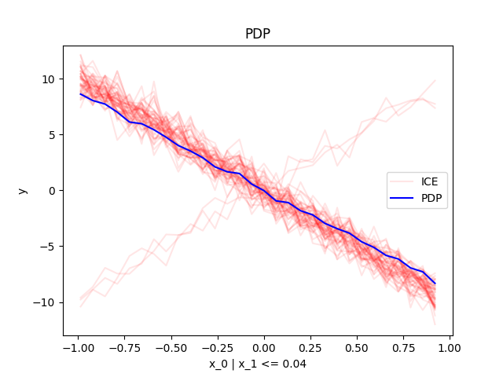
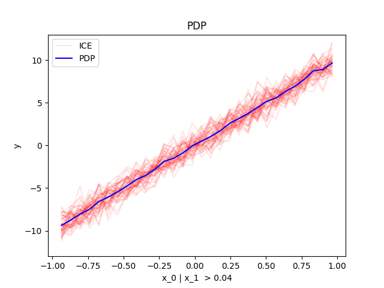

Home
Effector is a python package for global and regional feature effects.
How to use
You need a dataset
Must be a np.ndarray with shape (n_samples, n_features).
X = np.random.uniform(-1, 1, (100, 2))
plt.scatter(X[:, 0], X[:, 1], c="red", marker="x")
plt.xlabel("Feature 1")
plt.ylabel("Feature 2")
plt.xlim(-1.5, 1.5)
plt.ylim(-1.5, 1.5)
plt.show()

And a model
The black-box model you want to interpret.
Must be a callable with signature model(X: np.ndarray[n_samples, n_features]) -> np.ndarray[n_samples].
def predict(x):
y = np.zeros(x.shape[0])
ind = x[:, 1] > 0
y[ind] = 10*x[ind, 0]
y[~ind] = -10*x[~ind, 0]
return y + np.random.normal(0, 1, x.shape[0])
plt.scatter(X[:, 0], X[:, 1], c=predict(X), cmap="coolwarm", marker="x")
plt.xlabel("Feature 1")
plt.ylabel("Feature 2")
plt.xlim(-1.5, 1.5)
plt.ylim(-1.5, 1.5)
plt.colorbar()
plt.show()

Global Effect
As you do not know the model's form, you want to understand how Feature 1 relates to the model's output.
You can use Effector:
effector.PDP(data=X, model=predict).plot(feature=0, heterogeneity="ice")

Regional Effect
The plot implies that the global effect of Feature 1 on the model's output is zero,
but there is heterogeneity in the effect.
You want to further investigate the sources of heterogeneity:
reg_pdp = effector.RegionalPDP(data=X, model=predict)
reg_pdp.show_partitioning(feature=0)
reg_pdp.plot(feature=0, node_idx=0, heterogeneity="ice", y_limits=(-13, 13))
reg_pdp.plot(feature=0, node_idx=1, heterogeneity="ice", y_limits=(-13, 13))
reg_pdp.plot(feature=0, node_idx=2, heterogeneity="ice", y_limits=(-13, 13))
Feature 0 - Full partition tree:
Node id: 0, name: x_0, heter: 5.57 || nof_instances: 100 || weight: 1.00
Node id: 1, name: x_0 | x_1 <= 0.04, heter: 2.78 || nof_instances: 50 || weight: 0.50
Node id: 2, name: x_0 | x_1 > 0.04, heter: 1.03 || nof_instances: 50 || weight: 0.50
--------------------------------------------------
Feature 0 - Statistics per tree level:
Level 0, heter: 5.57
Level 1, heter: 1.90 || heter drop: 3.67 (65.85%)


Dive in
That was a simple example.
Effector has many more methods for obtaining global and regional effects
and
for each method many parameters to customize your analysis:
For a deeper dive, check out:
- the intoduction to global effects,
- the introduction to regional effects,
- the tutorials on synthetic examples: link 1, link 2, link 3, link 4,
- the tutorials on real examples: link 1, link 2, link 3.
- the guides on how to use effector: link 1
Methods
Effector implements the following methods:
| Method | Global Effect | Regional Effect | Paper |
|---|---|---|---|
| PDP | PDP |
RegionalPDP |
PDP, ICE, GAGDET-PD |
| d-PDP | DerPDP |
RegionalDerPDP |
d-PDP, d-ICE |
| ALE | ALE |
RegionalALE |
ALE, GAGDET-ALE |
| RHALE | RHALE |
RegionalRHALE |
RHALE, DALE |
| SHAP-DP | ShapDP |
RegionalShapDP |
SHAP, GAGDET-DP |